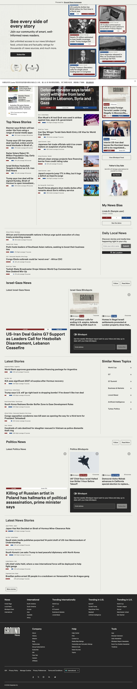
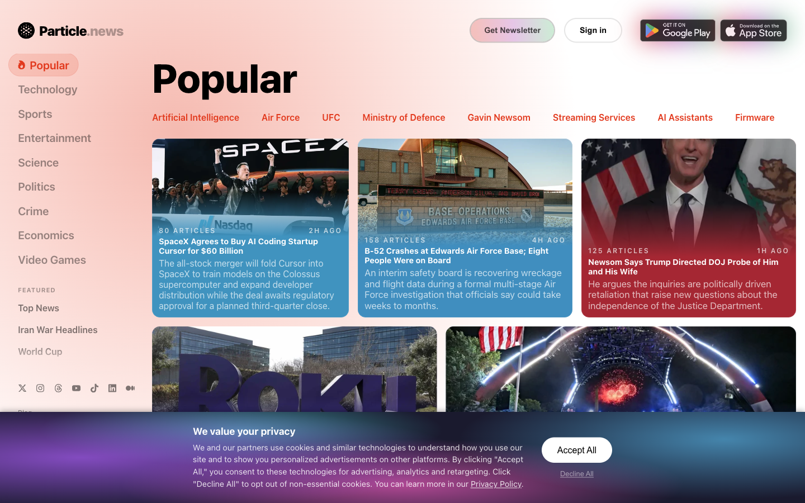
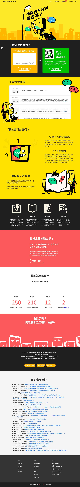
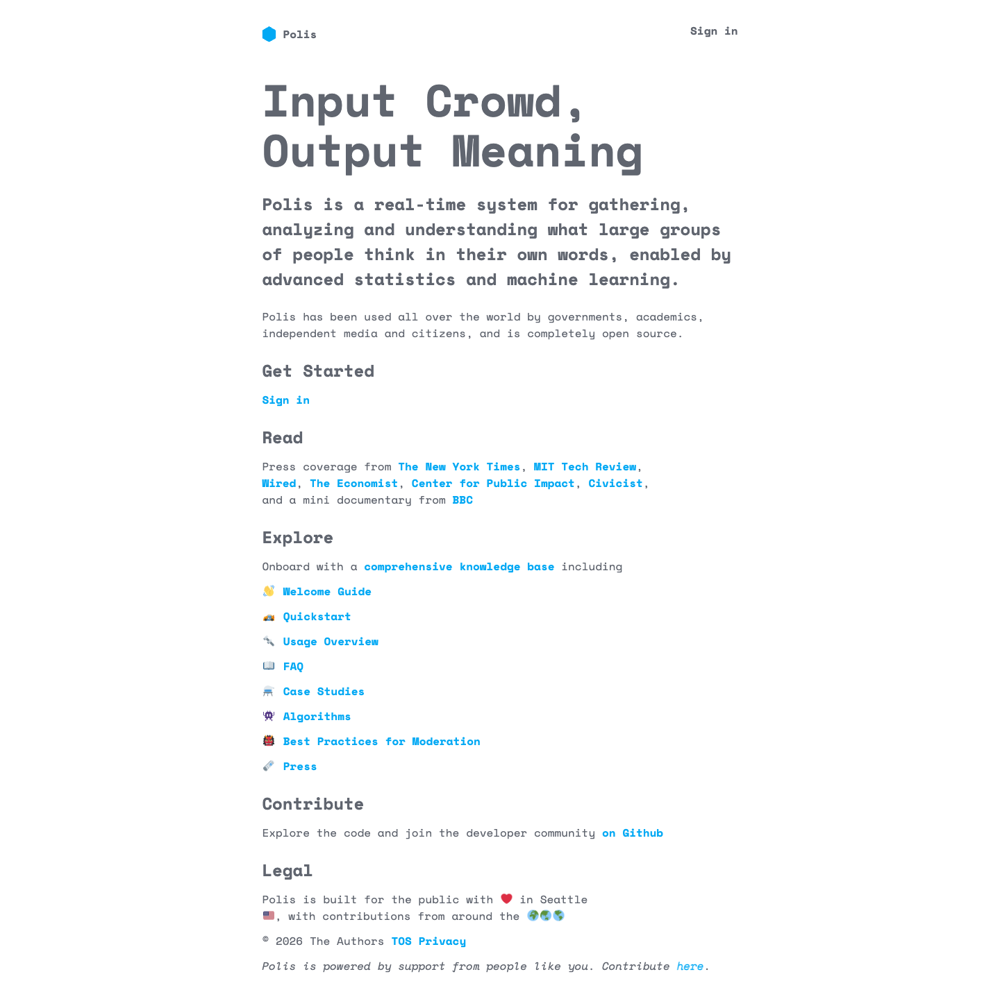

Ours
用 AI 修復台灣的公共討論
一個以「人」為主角的台灣公共社群平台——人分享、人討論、人投票，AI 在旁邊幫忙，不取代、不搶主角。
AI 應用策略簡報 ・ 社群骨架 × 六大 AI 應用 ・ 2026.06
作者：黃宣銘
01 這份簡報怎麼走
先講社群，再講 AI，最後談落地
01
社群平台骨架 Ours 是社群，AI 是配角
02
五條 AI 使用原則 AI 潛入資訊卡與討論串，必要時被 tag 進來
03
競品定位 含團隊借鏡的在地競品
04
功能 1 新聞整理＋搜尋發現
05
功能 2 立場光譜
06
功能 3 討論整理
07
功能 4 事實查核
08
功能 5 潛入式 AI 與 @Ours
09
功能 6 促進找共識
10
可行性 × 付費 × 落地
01 社群平台骨架
Ours 是社群平台，AI 是配角
底層是「人」——人分享、討論、投票、累積聲望。四根柱子借自團隊研究的在地競品，AI 只是增強它們。
分享與發現
Vibe Reader ・ Google 新聞
- 可建、可分享的閱讀清單
- 追蹤議題、探索（推薦 vs 追蹤）
投票與被看見
PTT ・ Reddit
- 推/噓、跨社群曝光
- 排序看跨立場認同，不只看讚數
聲望就是信任感
像 Reddit 那樣累積可信度
- 公開聲望分＝真人訊號
- 連動認證、墊高網軍成本
觀點交換文化
讓人願意好好說服彼此
- 用版規與文化促成對話
- 不只靠 AI 撮合
一開始怎麼做先讓大家覺得這裡跟自己有關，再慢慢帶去看不同觀點。先讓各族群「找到家」，有信任後，再用共識區和討論設計創造跨立場對話。
02 五條 AI 使用原則
AI 潛入資訊卡與討論串，必要時被 tag 進來輔助討論
01
助手，不是裁判
只整理、補充、提問、比對，不表態。
02
先找共同點
先看大家同意什麼，再談哪裡不同。
03
讓好溝通先被看見
協助溝通、串接觀點、整理共識與差異，讓不同立場都比較能接受的內容先出現。
04
誠實但不審查
標示可點開、可關、不擋內容。
05
★ 潛入式 AI
AI 輕量藏在資訊卡與討論串裡；需要時，使用者再 tag 它進來。
第 5 條 ・ 最關鍵這條把產品型態講清楚——Ours 不是 AI 聊天室，也不是 AI 主持的論壇；AI 會輕量潛入資訊卡與討論串，必要時才被使用者 tag 進來補脈絡、整理分歧、把討論拉回事實。
03 競品定位
不是無中生有，是把對的東西縫起來
機制都有人做過，Ours 的賭注是 整合＋在地化＋公共性＋合法導流＋社群骨架。團隊借鏡的在地競品：
| 競品 | 借鏡 | 對 Ours 的啟示 |
|---|---|---|
| 投票排名、聲望分、問答與討論文化 | 「先有歸屬感，再慢慢看不同觀點」；分眾經營＋良性投票 | |
| Particle / Vibe 類閱讀器 | 探索（推薦/追蹤）、閱讀清單可分享、AI 摘要 | 個人化發現＋社群分享 |
| Google 新聞 | 同議題多來源、追蹤議題、地方偏好 | 事件整理與訂閱的成熟做法 |
| PTT | 推/噓、P 幣、鄉民文化 | 在地投票與社群文化原型 |
| AllSides / 立場圖表 | 專題式立場分辨、分層呈現 | 不貼粗暴標籤，改用可比較的呈現方式 |
| 迷音 Miin | （反面）Feed UI 混亂＋新聞授權爭議 | 三塊式卡片；合法串接、導流分潤 |

Ground News盲點＋比較

AllSides立場分佈

Particle多來源聚合

Cofacts協作查核

Polis協助找共識
功能 1 新聞整理 ＋ 搜尋發現
誰決定你在首頁看到什麼新聞？
✓ 骨幹
A 事件聚合流
編輯／AI 決定 ・ Ground News
- 看見全貌、最有記憶點
- 搜尋＝用意思找議題，不只找關鍵字
- AI 佔比較重，使用者比較被動
B 個人化閱讀器
你自己決定 ・ Vibe Reader
- 個人掌控、黏著高
- 搜尋＝訂閱＋追蹤、探索
- 易同溫層、社群感弱
C 社群投票流
群眾決定 ・ Reddit／PTT
- 社群活力、冷啟動有路徑
- 搜尋＝分眾瀏覽、熱門榜
- 易被洗版、品質不一
手機初版以 A 事件卡片 Feed 為主軸；B 先收斂成「追蹤議題、收藏清單」，不要做成完整閱讀器；C 只當排序訊號，不做成 Reddit 式首頁。新聞卡用迷音啟發的三塊式：AI 摘要／標題／供應商。
功能 2 立場光譜
立場資訊「由誰、用什麼形式」給出？
✓ 主
A AI 自動光譜
機器判定 ・ Ground News
- 自動化、人覺得 AI 客觀
- 標籤中立性風險（藍綠白不行）
B 專題式並陳
編輯形式 ・ 報導者／天下
- 不貼標籤、最不易被罵帶風向
- 製作重、靠編輯人力
C 大家一起補標註
由社群一起整理
- 不是平台單方面說了算
- 一開始沒人標，也可能被灌票
手機初版以 A 事件層提示 為主，但在手機上不做複雜大圖表，只用短標籤、分布條、盲點提醒。B 變成點進事件後的「各方說法」分頁；C 等社群成熟再開。
功能 3 討論整理
怎麼讓好的討論被看見——靠 AI、文化，還是大家投票？
✓ 疊加
A AI 結構化摘要
AI 整理
- 即時、好懂、可以處理大量留言
- AI 可能講太多，要有界線
✓ 疊加
B 鼓勵好好討論的版型
靠版規與文化
- 文化最耐久、最真誠
- 養文化慢、需版主
✓ 疊加
C 大家投票
靠社群選出好內容
- 讓使用者一起決定
- 容易同溫層互推、爆文洗版
手機初版AI 摘要收成可展開區塊，先給共同點、分歧點和代表觀點；留言輸入框用版型引導好好講；投票先做「這則有幫助嗎」，不要一開始就做複雜評分。
功能 4 事實查核
誰來幫忙查證——查核機構、大家一起補，還是看來源可信度？
✓ 第一版先做
A 串接專業查核
機構 ・ Cofacts／TFC
- 最精準、可信
- 覆蓋率低、需有人查過
B 大家一起補查核
社群一起整理
- 涵蓋範圍比較廣
- 一開始沒人標，也可能被灌票
✓ 第一版示意
C 來源可信度
看媒體或帳號過去表現
- 自動化、揭露長期低品質
- 易被當「給媒體貼標籤」
手機初版第一版先做 A 命中就標示 ＋ C 來源提醒，呈現成卡片上的小徽章；點開才看原因。B 大家一起補查核先不做，避免手機流程太重、也避免被灌票。
功能 5 潛入式 AI 與 @Ours
AI 在社群裡「何時、以什麼身分」存在？
✓ 主打
A 潛入式參與者
資訊卡輔助＋@Ours 介入
- 最符合「人為主」、有互動感
- 平常輕量輔助，公開回應才需 tag
- 深度介入需要使用者叫進來
B 個人化助理
私人空間 ・ ChatGPT
- 個人深度、隱私
- 缺乏公共互動
C 常駐主持人
無所不在
- AI 太搶戲、會有被控制感
- 成本高，也違反「人為主」的原則
手機初版AI 先輕量潛入資訊卡與討論串，做摘要、脈絡、查核提示；需要公開補充時，才用 `@Ours` tag 進討論串，回覆短、附來源、可收合。⚙️ 深度回應才觸發成本
釐清 功能 5 延伸 ・ 大家一定會問
競品自己做 AI，我們用雲端 AI——比的不是誰聰明
「自己做的 AI 一定比較強」是迷思
- 我們接的是 Claude、GPT 這種第一線 AI，水準市場頂尖、還一直在進步
- 從頭自己做一個 AI 又貴又慢，做出來也不一定比較強
- 錢花在體驗跟串接，不必重造一台引擎
真正的差別：它手上「有什麼料」
- Meta AI 是黏在動態牆旁的萬能聊天機器人，目標是讓你多滑一下
- Ours 的 AI 手上有這件事的：各家新聞、立場、查核、這串的共識與分歧
- 被 tag 進來時，回答緊貼議題、保持中立、附上出處、幫你看到反方說法
一句話Meta AI 像百貨公司門口「什麼都能問」的問路機；Ours 的 AI 像這個議題的隨身助教——前者什麼都聊但都不深，後者只做一件事、但做到底。想閒聊本來就有 Meta AI；想真的搞懂一件公共議題、聽到不同立場，那才是我們要贏的點。
功能 6 促進找共識 ・ 平台靈魂
共識用什麼互動產生——投票、地圖、還是說服？
✓ 初版
A 投票表態型
像滑卡片一樣表態
- 輕量、手機好玩、門檻低
- 視覺較樸素
B 意見地圖型
把不同看法畫成地圖
- 視覺震撼、適合簡報
- 手機難讀、門檻高
C 說服遊戲型
讓人試著說服彼此
- 真誠、有人味、社群參與感
- 慢、需文化與版主
手機初版先做 A主畫面做滑卡表態＋共識溫度計，讓人用一隻手就能完成。B 意見地圖改成後台分析或桌機進階檢視，不放進手機初版；C 說服遊戲等文化長出來再做。⚙️ 這個功能不一定要靠大模型
04 技術可行性
用雲端 AI 串接，重點是把功能拆對
| 功能 | 雲端 API 可行？ | 關鍵限制與對策 |
|---|---|---|
| 1 事件整理＋搜尋 | ✓ 強項 | 批次處理＋快取；搜尋用「意思」找，不只靠關鍵字 |
| 2 立場光譜 | ✓ 可行 | 先訂清楚判斷標準，再用人工抽查 |
| 3 討論整理 | ✓ 可行 | 只在熱門議題跑、定時更新 |
| 4 事實查核 | ✓ 可行 | 比對查核資料庫，不靠 AI 自己記憶 |
| 5 潛入式 AI 與 @Ours | ✓ 很適合 | 輕量提示可批次處理，深度回應才由 @ 觸發 |
| 6 找共識 | ✓✓ 可行 | 手機先做滑卡表態＋統計，不一定要靠大模型 |
結論Ours 第一版採用雲端 AI API 串接。重點是把功能拆清楚：需要 AI 的地方才呼叫 AI，能用統計或產品機制解的地方就不要硬丟給 AI。要管的是三件事——成本、速度、隱私。
05 單篇付費 × AI 摘要
摘要是「導讀」，不是免費替代品
- 摘要只到導讀層級（三塊式：AI 摘要／標題／供應商），不重述付費全文
- 付費卡標 🔒 付費，CTA「前往原文（付費）」或「單篇解鎖」
- 收費別只押單篇微支付，三軌併行更穩
① 導流分潤② 單篇解鎖③ 跨媒體訂閱包
⚠️ 借鏡Blendle 是單篇微支付先驅，後來放棄改訂閱——證明微支付難長期。Vibe Reader 則用「付費解鎖 AI」的個人化模式。
定位加分「摘要只導讀、全文導流分潤」強化 Ours vs 迷音的「合法、與媒體共榮」差異。
06 功能落點
社群骨架上，六個功能落在三張主畫面
首頁
事件整理流（功能1）＋可分享閱讀清單＋跨立場都能接受的投票＋查核徽章（功能4）。
議題聚合頁
共同事實摘要（功能1）＋立場光譜/專題並陳（功能2）＋各家來源導流。
議題討論頁
可展開 AI 摘要＋討論引導＋有幫助投票（功能3）＋滑卡共識區（功能6）＋ @Ours 介入（功能5）。
個人/社群
聲望分、閱讀清單、追蹤、分眾社群（社群骨架）。
下一步依社群骨架畫手機 wireframe，從首頁、議題聚合頁、議題討論頁三張主畫面下手；共識功能先做滑卡表態＋溫度計，當作可點 Prototype 主秀。
結語
一個以人為主的平台，
AI 只是讓我們更會聽彼此。
第一版先聚焦「事實」和「觀點」；先讓人找到歸屬感，再慢慢看見不同立場。
讓台灣有一個更能好好討論公共議題的平台。
謝謝 — 接下來進入手機 wireframe ・ 共識滑卡優先做可點初版
OURS作者：黃宣銘1 / 15